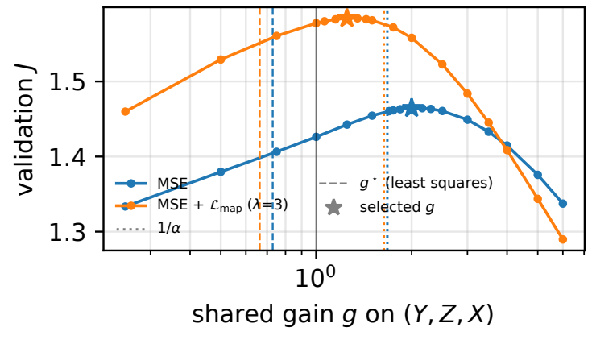
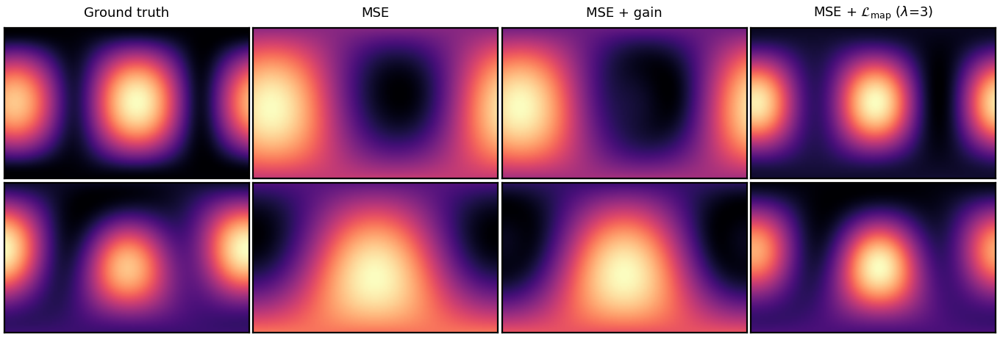

Too Diffuse to Localize: Diagnosing and Correcting the MSE Bias in Video-Guided Ambisonic Spatialization
Liming Liang, Lingfeng Yang, Luo Chen, Yuguo Yin, Zihan Xiong, Yuexian Zou
School of Electronic and Computer Engineering, Peking University, Shenzhen · Guangdong Provincial Key Laboratory of Ultra High Definition Immersive Media Technology, Shenzhen Graduate School, Peking University · South China University of Technology
Video-guided first-order ambisonic (FOA) spatialization predicts the directional channels of a sound field from a mono track and its 360-degree video. We show that spatializers trained with the standard complex-spectrogram mean-squared error (MSE) are biased toward diffuse fields: the MSE-optimal prediction is a conditional mean whose directional energy is reduced by the conditional variance of the source direction given the video, and whose shape is a posterior average over plausible directions. On the spherical energy maps used by 360-degree benchmarks this lowers correlation (CC) and AUC even when the peak direction is right. A validation-selected gain on the directional channels recovers part of the gap, but we remove the bias at its source with a differentiable energy-map loss written in closed form from the STFT spatial covariance. On 6,553 YT-Ambigen test clips this raises CC from 0.738 to 0.781 and AUC from 0.899 to 0.920, beats the calibrated MSE model, and flattens the gain curve, while leaving the mono channel untouched. The benchmark's camera direction, we further show, coincides with the target map's peak: a zero-parameter plane wave placed there already scores 0.69–0.75, matching end-to-end generation. We therefore report all models with and without it.
Key findings
Diagnosis. MSE regression of the zero-mean directional channels returns a conditional mean: its energy is shrunk by the conditional variance of the source direction (shrinkage factor α = 0.60 for our MSE model) and its shape is a posterior average — a smeared field. The validation-selected gain (2.0) exceeds 1/α = 1.68 and is far above the least-squares gain (0.73): calibration compensates for smearing, not only for lost energy.
Metric-aligned loss. The benchmark energy map is a quadratic form of the 4×4 STFT spatial covariance, so it can be differentiated in closed form. Adding its correlation to the objective raises test CC from 0.738 to 0.781 (0.775 with λ = 3), above the calibrated MSE model, and makes the gain curve flat.
Benchmark protocol. The camera direction shipped with YT-Ambigen is the arg-max of the ground-truth energy map (median 3.2° away): a plane wave placed there scores CC 0.689, and the released mono-to-FOA encoder flips the Y axis (0.291 with that convention). Without the camera direction, the map loss lifts video-driven localization from 0.364 to 0.500.

Validation objective vs. a shared gain on the predicted directional channels: the MSE model peaks far from g = 1, the map-loss model near g = 1.

Whole-clip energy maps: ground truth, MSE, MSE with the selected gain, MSE + map loss. The gain sharpens the MSE map but cannot move its mass.
Audio examples (test clips, camera direction given)
Each example shows the 360° video (equirectangular, muted) and, for the ground truth and three spatializers, the whole-clip energy map (2° grid, official decode; azimuth −180…180°, elevation −90…90°) with a stereo render for quick listening (virtual cardioid pair: L = W + Y, R = W − Y) and the full 4-channel FOA file (ACN/SN3D, 16 kHz) for download. The mono input W is the ground-truth mono channel in all rows; only the directional channels differ. CC is the full-clip correlation with the ground-truth map. The first five clips are those where the map loss gains most over MSE; the last three are typical clips near the median.
Citation
@inproceedings{liang2027diffuse,
title = {Too Diffuse to Localize: Diagnosing and Correcting the {MSE} Bias in Video-Guided Ambisonic Spatialization},
author = {Liming Liang and Lingfeng Yang and Luo Chen and Yuguo Yin and Zihan Xiong and Yuexian Zou},
booktitle = {Proc. IEEE Int. Conf. Acoustics, Speech and Signal Processing (ICASSP)},
year = {2027}, note = {submitted}
}
Acknowledgement: this work is supported by Guangdong Provincial Key Laboratory of Ultra High Definition Immersive Media Technology (Grant No. 2024B1212010006) and financially supported by Shenzhen Science and Technology Program (Grant No. SYSPG20241211173440004). Data: YT-Ambigen (Kim et al., ICLR 2025); only short test excerpts are shown here for research purposes.